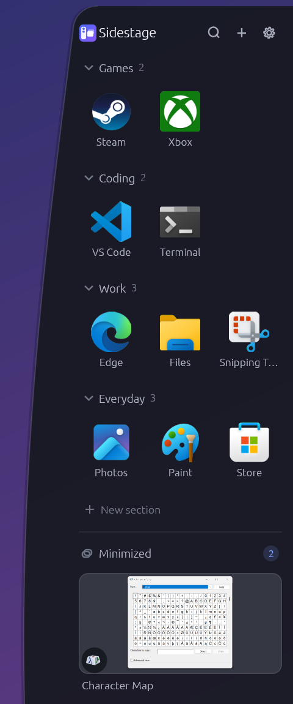
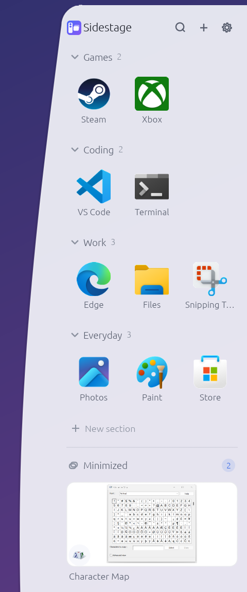
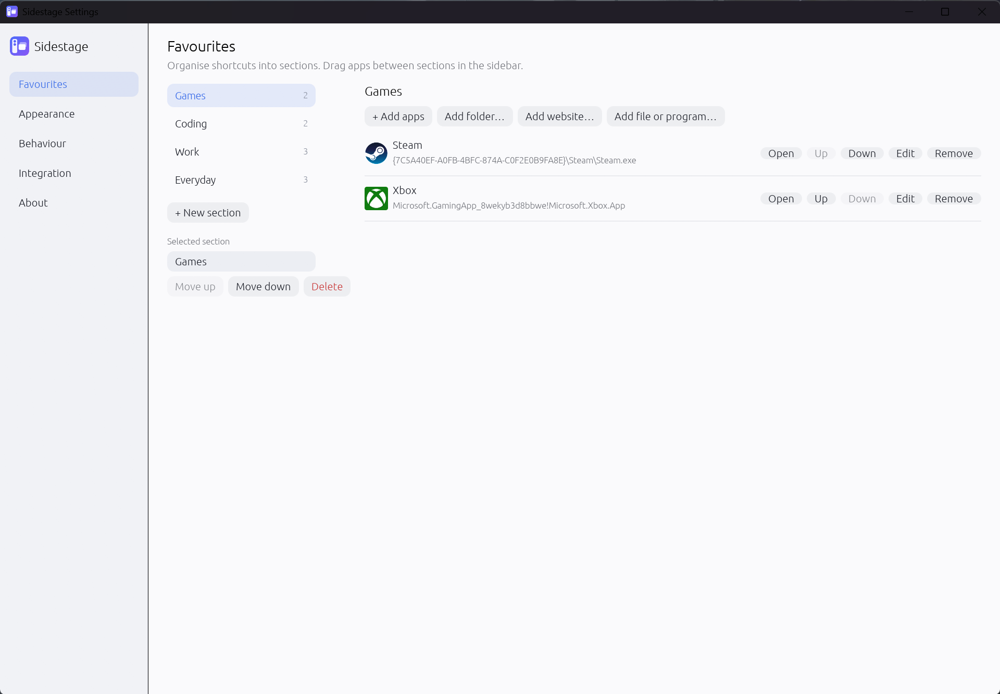
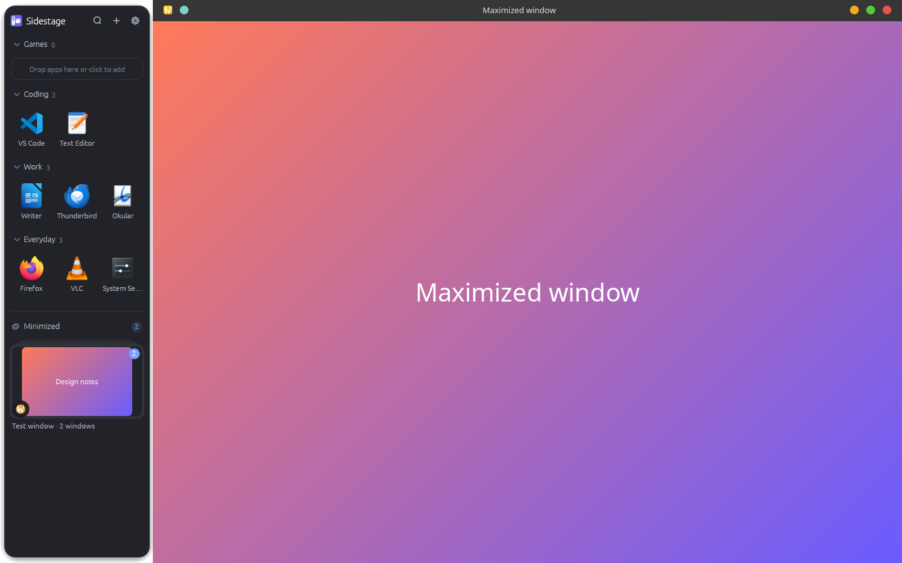
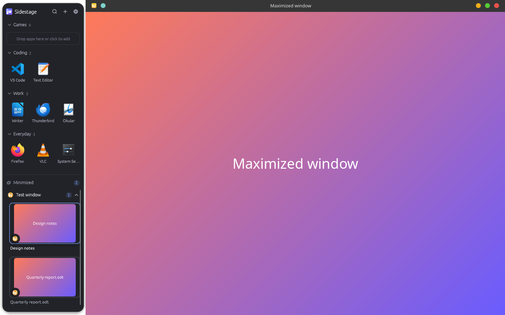
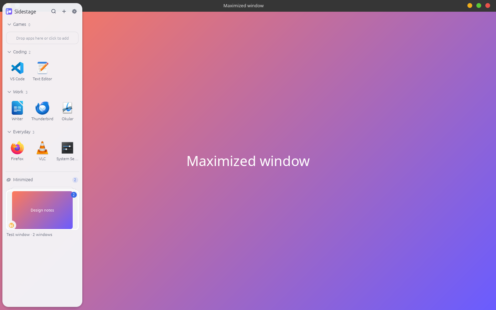
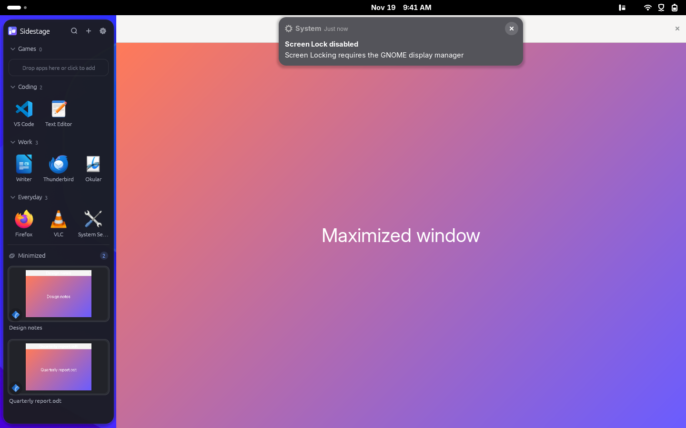

Expandable Sections
Create, rename, reorder, collapse, and delete sections like Games, Coding, Work, and Everyday. Drag favourites to reorder or move between sections.
An edge sidebar inspired by macOS Stage Manager — without hijacking your workflow. Keep favourite apps in expandable sections at the top and minimized windows as one-click preview cards underneath.
Maximized windows respect Sidestage's reserved edge space. Click − above to send this window to the Minimized tray, or click any card to restore it.
Favourites stay put whether the app is running or not — arranged cleanly in your own collapsible sections.
Create, rename, reorder, collapse, and delete sections like Games, Coding, Work, and Everyday. Drag favourites to reorder or move between sections.
Add via the installed-apps picker (Start menu / .desktop) or drag shortcuts, .exe, .lnk, folders, and .url files straight onto the sidebar. Batch-open with Launch section.
Press Ctrl+Alt+Space to search favourites and minimized windows together. Use ↑/↓, Enter to launch or restore, and Esc to hand focus right back.
Sidestage only lists windows you minimize yourself, and steps aside automatically when you go fullscreen.
Windows 11 renders live DWM thumbnails right inside the card. KDE Plasma and GNOME capture crisp minimize-time snapshots. Multiple minimized windows from the same app automatically stack — click to expand, or right-click for Restore all windows.
When a fullscreen game or video covers the sidebar's monitor, Sidestage hides itself, its edge reveal, and its reserved space. During normal clicks, it never steals keyboard focus from your active app.
Reserve screen space so maximized windows stop neatly at the sidebar — or turn on auto-hide so it slides away and reveals smoothly when you point at the left or right edge.
Adjustable width, icon size, preview height, monitor choice, HiDPI scaling, and light/dark/system themes — persisted atomically in a single config.json.







Borderless always-on-top sidebar, Settings UI, tray, single-instance guard & auto-hide state machine.
Atomic JSON config, section/favourite ops, WindowTracker grouping, unified search & .desktop parser.
Unified WindowEvent API over Win32/DWM, KWin Wayland + ScreenShot2, GNOME D-Bus extension & X11/EWMH.
SetWinEventHook · Live DWM thumbnails · AppBar space reservation
plasma_window_management · KWin ScreenShot2 · wlr-layer-shell · No extension
sidestage@sidestage.app D-Bus extension · paint_to_content · Strut chrome actor
_NET_CLIENT_LIST · Icon + title cards · _NET_WM_STRUT_PARTIAL
User-level install, Start menu shortcuts, optional launch at sign-in.
Sidestage-Setup-0.3.0.exe
Download Installer ↗
Drop anywhere and run — ideal for quick trials or portable setups.
sidestage-windows-x64-portable.exe
Download Portable ↗
SmartScreen: Installer is unsigned — click More info → Run anyway. Silent install: Sidestage-Setup-0.3.0.exe /VERYSILENT.
sudo pacman -S --needed base-devel git rustup libxkbcommon mesa wayland libx11
rustup default stablegit clone https://github.com/danny19862025/sidestage && cd sidestage && scripts/install-linux.sh